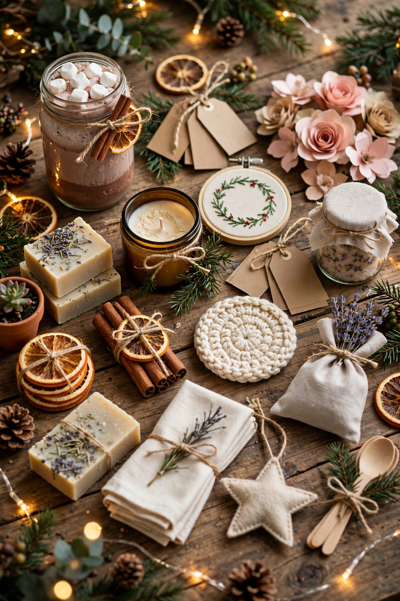

Christmas Crafts DIY Gifts
15 Easy DIY Christmas Gifts You Can Make in Under 1 Hour

Handmade gifts do not need to take all weekend. These 15 are quick, useful, and easy to wrap. Pick 3, make them in one afternoon, and you are done. Each gift takes under 1 hour of active work, costs $3 to $12, and needs no sewing machine.
The trick is to pick gifts that match the person and the supplies you already have. A teacher who loves tea will like a cocoa jar more than a clay dish. A friend who carries a tote will like a bag charm more than a candle. Read through the list, pick the ones that fit your people, and make them in batches. Making 5 cocoa jars at once takes little more time than making 1.
The 15 gifts
- Beaded bag charm — 15 minutes, about $3. Thread beads on beading wire, add a lobster clasp, and crimp the ends. See our full tutorial for the steps. Good for friends and teens.
- Hot cocoa jars — 20 minutes, about $5. Layer cocoa powder, sugar, mini marshmallows, and chocolate chips in a mason jar. Add a tag with instructions: add hot milk and stir. Good for teachers and neighbors.
- Hand embroidered hoop — 1 hour, about $6. Stitch a small floral design in a 4 inch hoop with backstitch and lazy daisy. See our embroidery guide for the 5 stitches. Good for family and close friends.
- Scented candle — 30 minutes plus cooling, about $8. Melt soy wax, add a few drops of essential oil, pour into a jar with a wick, and let it set for 4 hours. Use vanilla or cinnamon for a Christmas scent. Good for anyone.
- Photo coasters — 30 minutes plus drying, about $6 for a set of 4. Print a photo to fit a tile, glue it on with Mod Podge, seal with 2 coats, and add felt to the back. Good for grandparents and parents.
- Knitted mug cozy — 45 minutes, about $4 in yarn. Knit a simple rectangle in garter stitch, sew the ends together, and add a button. Good for tea and coffee lovers.
- Sugar scrub jars — 10 minutes, about $4. Mix 1 cup sugar with half a cup of coconut oil and a few drops of lemon or vanilla. Spoon into a small jar and tie with twine. Good for teachers and coworkers.
- Paper flower bouquet — 45 minutes, about $5. Cut petals from crepe paper, shape them around a wire stem, and wrap the stem with green tape. Good for friends who like flowers.
- Personalized ornaments — 20 minutes, about $3 each. Fill a clear bauble with a little paint, swirl it around, and let it dry. Write a name on the outside with a paint pen. Good for kids and family.
- Infused olive oil — 15 minutes plus 1 week to infuse, about $7. Put rosemary and a dried chili in a clean bottle, fill with olive oil, and leave it in a dark place for a week. Add a tag with the date. Good for cooks.
- Bookmark with tassel — 15 minutes, about $3. Cut a card to bookmark size, punch a hole at the top, thread ribbon through, and add a tassel made from embroidery floss. Good for readers and students.
- Clay ring dish — 30 minutes plus drying, about $5. Roll air dry clay flat, cut a circle, press it into a small bowl to shape it, and let it dry for 24 hours. Paint and seal it. Good for anyone who wears rings.
- Herb garden kit — 20 minutes, about $8. Fill a small pot with soil, add basil or mint seeds, and write the plant name on a wooden marker. Good for cooks and gardeners.
- Gift tags set — 20 minutes for a set of 10, about $3. Stamp or draw a simple design on kraft tags, punch a hole, and thread twine through. Tie them in a bundle with ribbon. Good as a gift on its own or tied to another gift.
- Simmer pot kits — 15 minutes, about $4. Put dried orange slices, cinnamon sticks, and whole cloves in a small bag with a card that says: simmer in a pot of water on the stove. Good for neighbors and hosts.
How to choose
For teachers: cocoa jars, sugar scrub, or gift tags. For friends: bag charms, candles, or coasters. These are personal but easy to use. For family: embroidered hoops, photo coasters, or herb kits. These take a little more time, and family will keep them. For kids: ornaments, bookmarks, or paper flowers.
Think about what the person already has. If they do not drink coffee, a mug cozy is not the best pick. If they do not cook, infused olive oil will sit in a cupboard. When in doubt, pick a candle, a cocoa jar, or a sugar scrub.
Supplies to buy in bulk
Buy jars, twine, kraft tags, and ribbon in bulk before you start. A pack of 12 mason jars costs about $12, which is $1 per jar instead of $3 each.
How to make 10 gifts in one afternoon
Set up a work table with all your supplies in one place. Make the gifts in groups by type: first all the jars, then all the paper gifts, then all the sewn or stitched gifts. Start with the gifts that need drying time, like candles and clay dishes, so they can set while you make the faster gifts.
How to wrap handmade gifts
Wrap in kraft paper and twine. It looks handmade in a good way, and it costs less than printed wrapping paper. Add a sprig of rosemary or a cinnamon stick under the twine for a Christmas smell. Write the person's name on a kraft tag with a pen, and add a short note about what the gift is. For jars, tie the tag to the lid with twine.
Common mistakes to avoid
Do not start a gift the night before you need it. Gifts that need drying time, like candles, clay dishes, and coasters, need hours to set. Do not make a gift you have never tried before for someone important. Make one test version first, check that it works, then make the real one.
Frequently asked questions
How much do handmade Christmas gifts cost? Most gifts on this list cost $3 to $12 each. Buying jars, twine, and tags in bulk drops the cost to $3 to $5 per gift.
Can I make these gifts with kids? Yes, many of them are good for kids. Ornaments, gift tags, simmer pot kits, and paper flowers are safe and fun for children to help with.
How early should I start making Christmas gifts? Start 2 to 3 weeks before Christmas. Make the gifts that need drying or infusing time first. Make the quick gifts, like sugar scrubs and bag charms, in the last week.
What if I only have one afternoon? Pick 3 gifts that use the same supplies. Cocoa jars, sugar scrubs, and simmer pot kits all use jars and tags, so you can make 5 of each in about 2 hours.